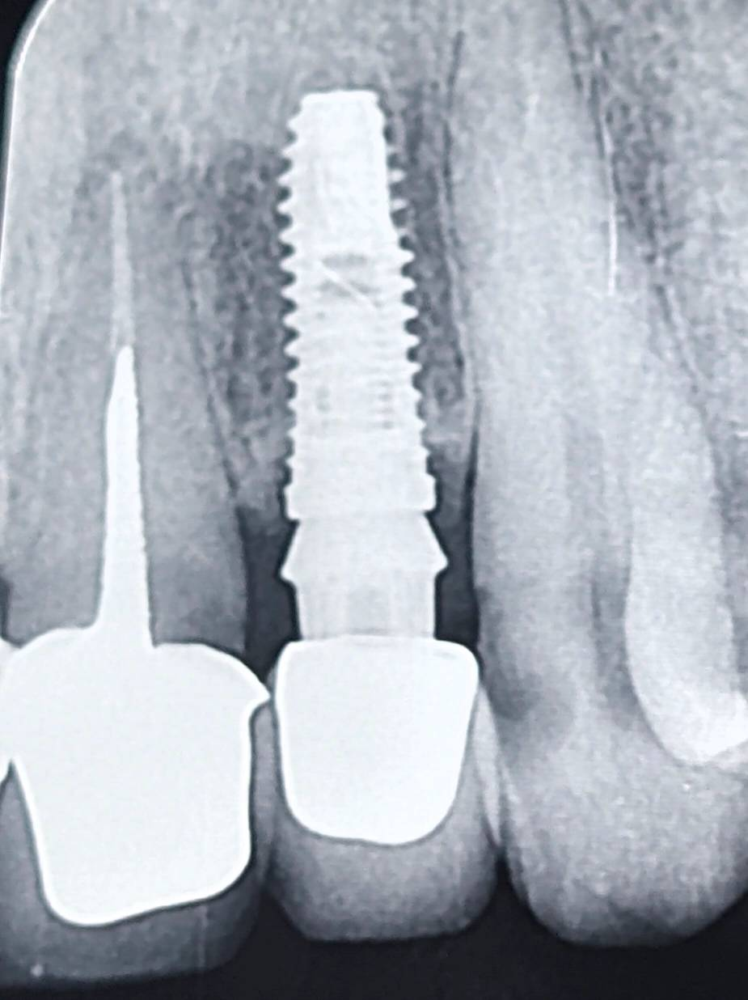

بیمار با یک روکش ایمپلنتی در ناحیه قدامی مراجعه کرده بود.
در بررسی رادیوگرافی، اختلاف قابل توجهی بین فینیشلاین اباتمنت و مارجین روکش دیده میشد.
بهعبارتی، مارجین روکش پایینتر از فینیشلاین قرار گرفته بود و یک فاصله عمودی ایجاد شده بود.
این نوع خطا معمولاً در دو مرحله میتواند ایجاد شود:
• در مرحله قالبگیری
• یا در فاز تحویل روکش
اگر خطا در جلسه تحویل رخ دهد (مثلاً روکش بهدرستی ننشسته باشد)،
دندانپزشک با حذف اینترفرنسها و تنظیم انسیزال یا سطح اکلوزال میتواند نشستن کامل روکش و برقراری اکلوژن را بررسی کند.
اما در این کیس، شواهد نشان میداد که روکش از ابتدا به همین فرم ساخته شده است.
نه از نظر فریم و نه از نظر پرسلن، نشانهای از گیر یا تراش اضافی وجود نداشت.
بنابراین، منشأ خطا به احتمال زیاد در مرحله قالبگیری بوده است.
در این سناریو این احتمال وجود دارد که دندانپزشک در جلسه قالبگیری، اباتمنت را بسته و قالب نهایی را تهیه کرده باشد،
اما فینیشلاین بهدرستی در قالب ثبت نشده است.
در نتیجه، لابراتوار بر اساس اطلاعات ناقص، روکش را کوتاهتر از فینیشلاین ساخته است.
پیامد این خطا، ایجاد فاصله بین مارجین روکش و فینیشلاین است؛
و این فاصله میتواند منجر به تجمع پلاک، التهاب بافت نرم و کاهش پیشبینیپذیری درمان شود.
این کیس یادآوری میکند:
در رستوریشنهای ایمپلنتی، دقت در ثبت فینیشلاین صرفاً یک جزئیات تکنیکی نیست،
بلکه نقطهای تعیینکننده در سلامت بلندمدت بافتهاست.
خطایی که در قالبگیری رخ میدهد، ممکن است تا زمان تحویل دیده نشود—
اما اثر آن در بیولوژی بافتها کاملاً واقعی است.